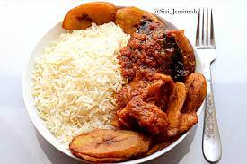

Stewed Rice

Description
White Rice and Stew is one of the most popular Igbo Food. Rice recipe is common because it can be eaten with any stew or sauce of your choice.
Ingredients
- Palm fruit
- Meat
- Fish
- Stock fish
- Crayfish
- onions
- Fresh pepper
- Stock cube
- Ehulu
- Okpei
- Dried ginger and garlic
- Scent leaves
- Ugu
- Salt
Steps
- Cook your palm fruit till tender, wash and set aside
- Wash and cut your cent leave, ugu and onions
- Pound your ehulu, okpei dried ginger and garlic together
- Pound fresh pepper and crayfish together
- Parboil your white rice, wash and cook till tender
- Put your palm fruit extract on your cooking gas, cook till it thicken to a consistency you like for your stew
- Add your cooked meat and stock
- Add your pounded crayfish and pepper
- Add your pounded ehulu, okpei, dried ginger and garlic leave to boil very well.
- Add your cent leave and ugu, leave to simmer for 2 minutes
- Your banger stew is ready
- Serve with white rice
Return to main page